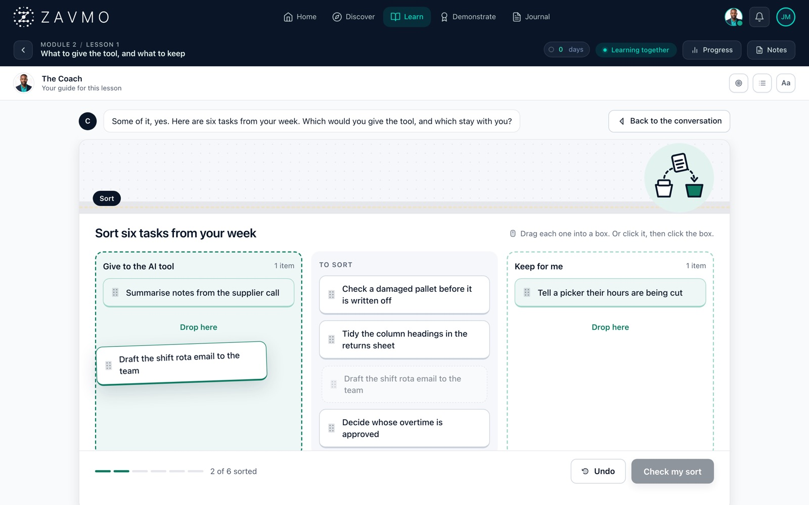
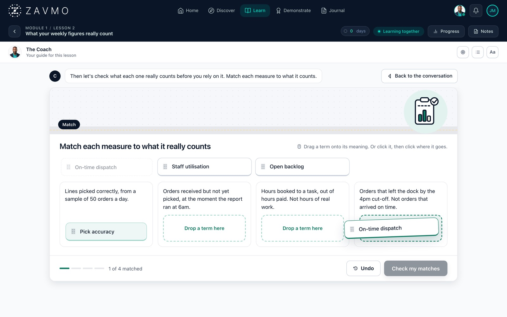
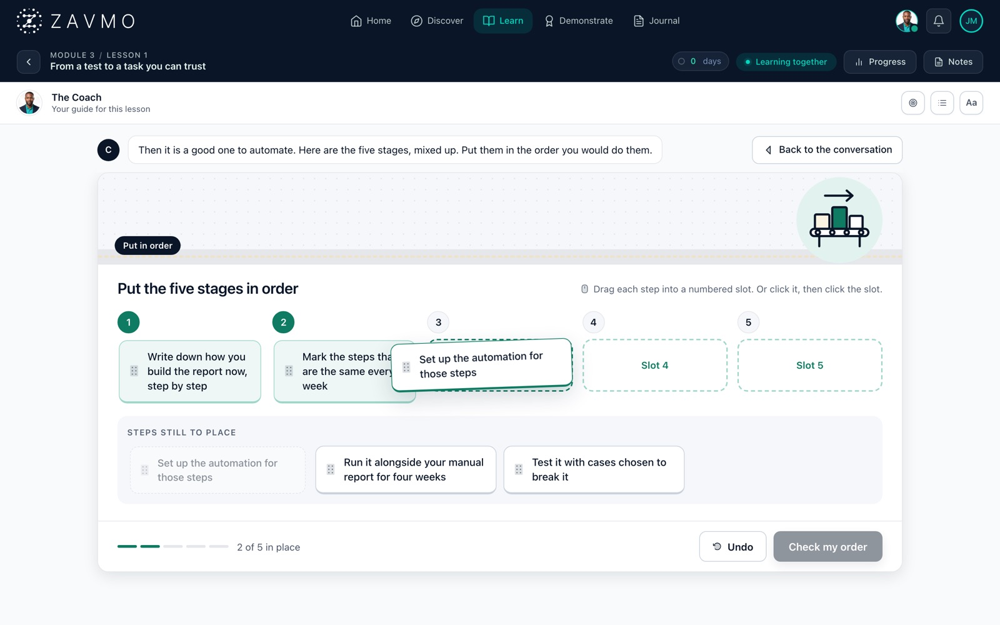
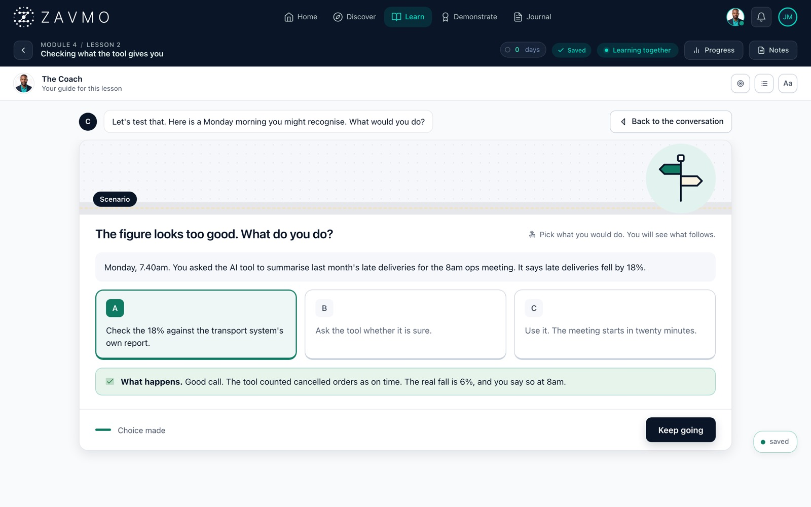
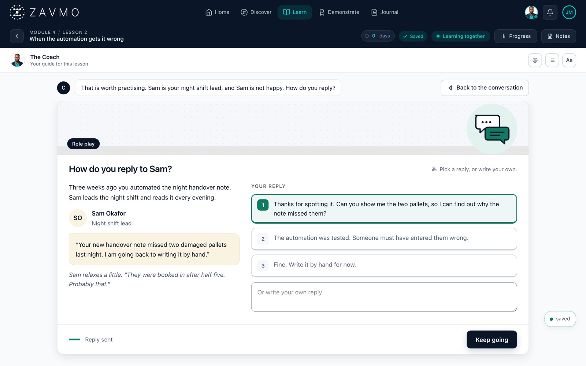
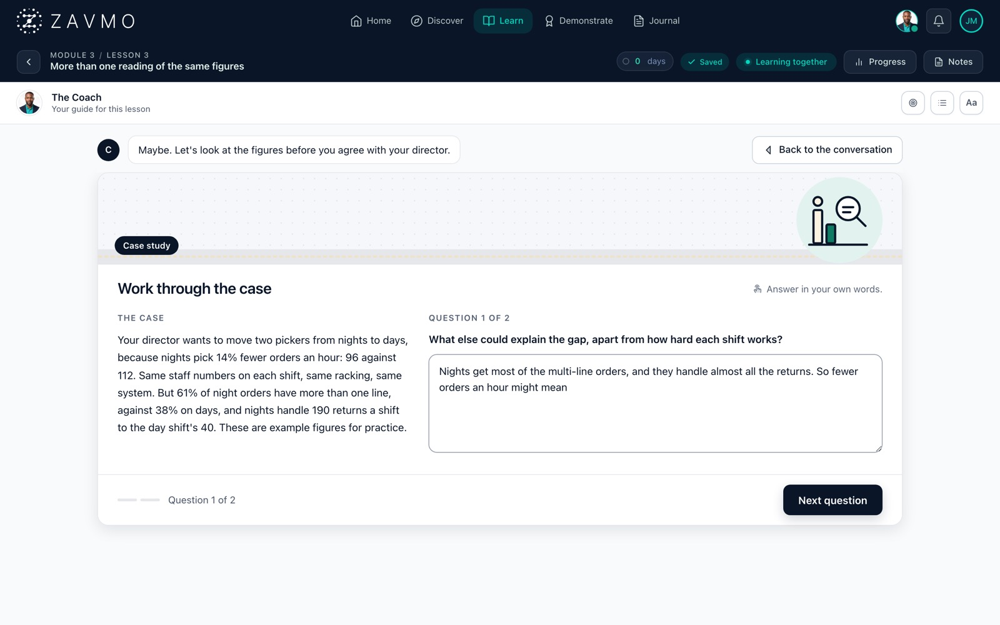
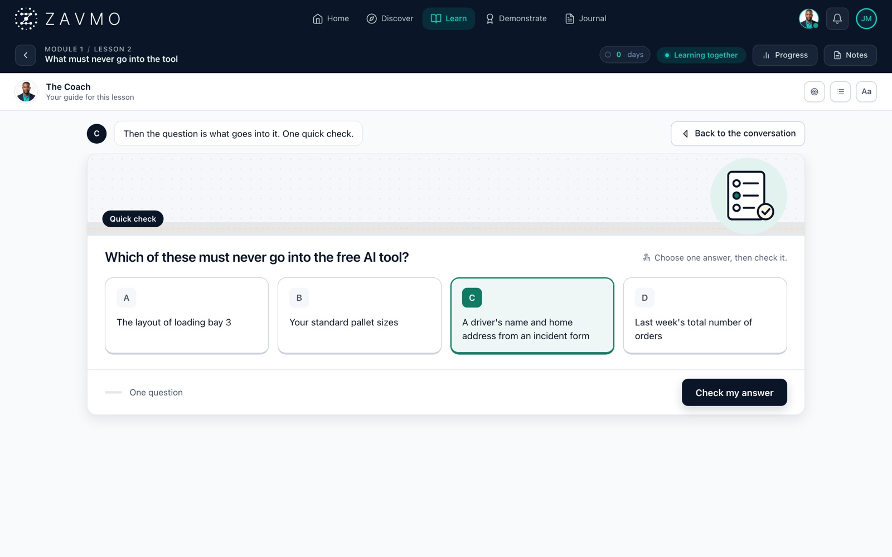
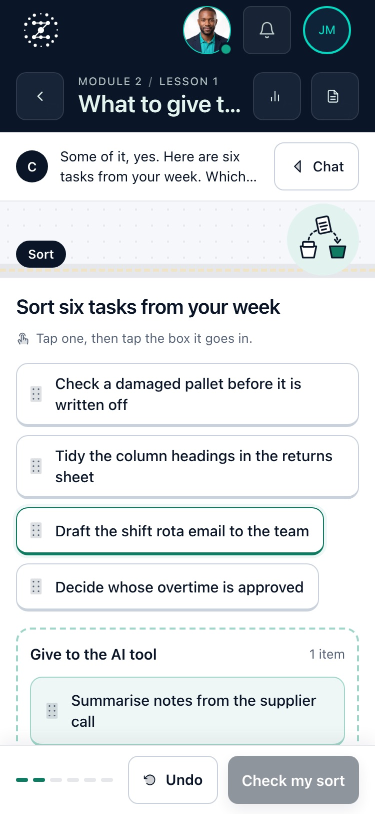

Practice games in a lesson
When a point needs practising, the tutor turns the lesson into a short game. When it is done, the learner goes back to the conversation.
Games are switched on or off for each pathway, and the tutor picks the game that fits the point. These screens are from the live platform, with an example learner on our Future Fluency course. In your course the tutor writes each game from your own content.

Sort the items into groups
Six things from the learner's own week, each dragged into the right box. On a phone it is tap, then tap.

Match each term to what it means
Pairs the learner joins up, for the words a course depends on.

Put the steps in order
For a process the learner has to get right, step by step.

Choose a path
A situation from work. The learner picks what to do and sees what happens next.

Reply to a colleague
A short conversation with someone at work. The learner picks a reply or writes their own, and the other person reacts.

Work through a case
A longer example with a few questions, answered in the learner's own words.

One question to check it stuck
A single question at the end of a point, before the lesson moves on.

The sort game on a phone
The same game, tap to pick and tap to place, with the check button at the foot of the screen.
See two of them played
A 36-second film of a learner playing a sort and a quick question, filmed live.
Watch the film